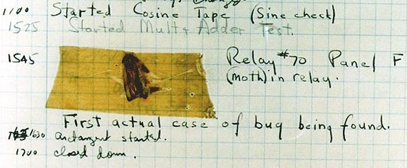
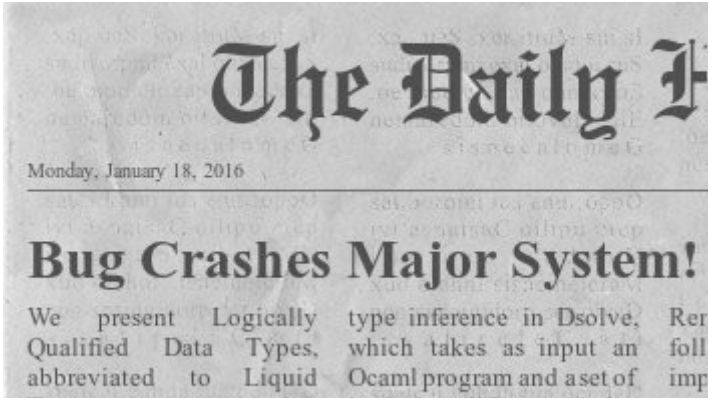
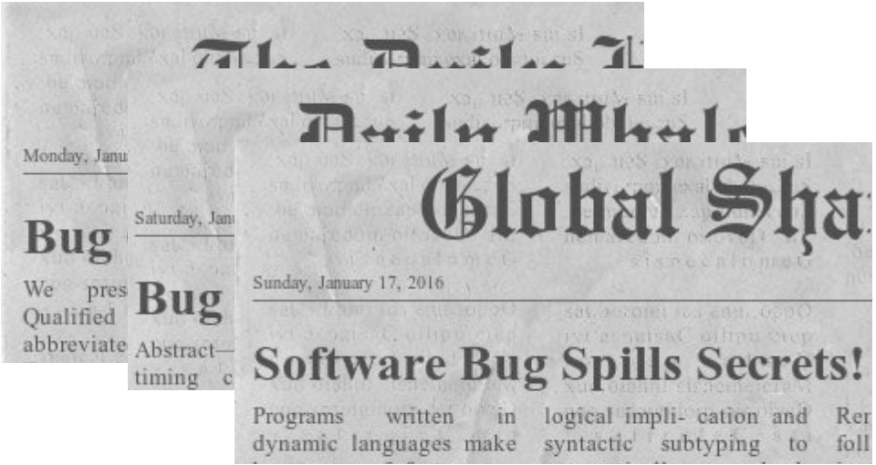
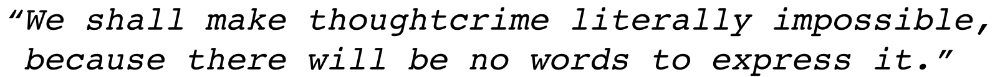
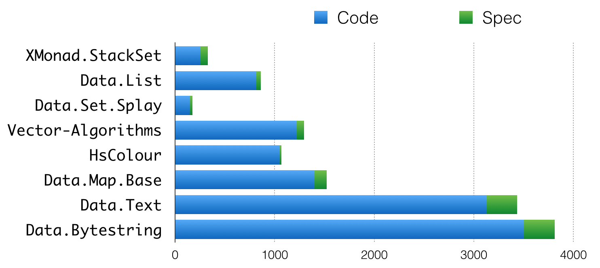

Verification and Synthesis with Refinement Types
Ranjit Jhala (UCSD)
Niki Vazou (UMD)
Nadia Polikarpova (MIT)
Follow Along Here
Plan
Part I: Refinement Types
Part II: Reflection
Whats this?
The First Bug

Page from Harvard Mark II log
A dead moth removed from the deviceFast forward to Present Day

Fast forward to Present Day
Fast forward to Present Day

Programming Languages Research
George Orwell (1984)

Modern Languages
F#
Rust
Scala
OCaml
Haskell
Modern Languages
Static Typing
First-class Functions
Immutability by Default
Modern Languages
Static Typing
First-class Functions
Immutability by Default
Make good designs easy and bad designs hard
Modern Languages?
Alas ... well-typed programs go very wrong!
Well-typed programs can go very wrong!
Well-typed programs can go very wrong!
Divide-by-zero
Keys missing in Maps
Pattern-match failures
Well-typed programs can go very wrong!
Divide-by-zero
Keys missing in Maps
Pattern-match failures
Buffer overflows (!)
Non-termination
Functional Correctness / Assertions...
Division By Zero
λ> let average xs = sum xs `div` length xs
λ> average [100, 202, 300]
2
Division By Zero
λ> let average xs = sum xs `div` length xs
λ> average [100, 202, 300]
2
λ> average []
*** Exception: divide by zero
Missing Keys
λ> :m +Data.Map
λ> let m = fromList [ ("haskell" , "lazy")
, ("javascript" , "eager")]
Missing Keys
λ> :m +Data.Map
λ> let m = fromList [ ("haskell" , "lazy")
, ("javascript" , "eager")]
λ> m ! "haskell"
"lazy"
Missing Keys
λ> :m +Data.Map
λ> let m = fromList [ ("haskell" , "lazy")
, ("javascript" , "eager")]
λ> m ! "haskell"
"lazy"
λ> m ! "clojure"
"*** Exception: key is not in the map
Segmentation Faults
λ> :m +Data.Vector
λ> let v = fromList ["haskell", "javascript"]
λ> unsafeIndex v 0
"haskell"
Segmentation Faults
λ> :m +Data.Vector
λ> let v = fromList ["haskell", "javascript"]
λ> unsafeIndex v 0
"haskell"
λ> V.unsafeIndex v 3
'ghci' terminated by signal SIGSEGV ...
HeartBleeds

HeartBleeds
λ> :m + Data.Text Data.Text.Unsafe
λ> let t = pack "Barcelona"
λ> takeWord16 5 t
"Barce"
HeartBleeds
λ> :m + Data.Text Data.Text.Unsafe
λ> let t = pack "Barcelona"
λ> takeWord16 5 t
"Barce"
Memory overflows leaking secrets...
λ> takeWord16 20 t
"Barcelona\1912\3148\NUL\15928\2486\SOH\NUL"
Goal: Programmer Extensible Analysis
To prevent wider class of errors
To enforce program specific properties
To analyze during development (not just validate after)
Plan
Part I: Refinement Types
Part II: Reflection
Evaluation
Diverse Code Bases
10KLoc / 56 Modules
Memory Safety, Termination, Functional Correctness
Inference is Crucial
Evaluation

Specifications: 1 / 10 LOC (ok)
Compile Time: 1s / 20 LOC (not ok!)
Evaluation
| Library | LOC | Specs | Time |
|---|---|---|---|
XMonad.StackSet |
256 | 74 | 27s |
Data.List |
814 | 46 | 26s |
Data.Set.Splay |
149 | 27 | 27s |
Data.Vector.Algorithms |
1219 | 76 | 61s |
Data.Map.Base |
1396 | 125 | 68s |
Data.Text |
3128 | 305 | 231s |
Data.Bytestring |
3505 | 307 | 136s |
| Total | 11512 | 977 | 574s |
Conclusion
Refinement Types: Automated Dependent Typing via SMT
| Refinements: | Types + Predicates |
| Specification: | Refined Input/Output Types |
| Verification: | SMT-based Predicate Subtyping |
| Measures: | Specify Properties of Data |
| Termination: | Well-founded Metrics |
| Reflection: | Haskell functions in Logic |
Current & Future Work
Faster Checking
Easier Errors
Code Synthesis
Thank You!